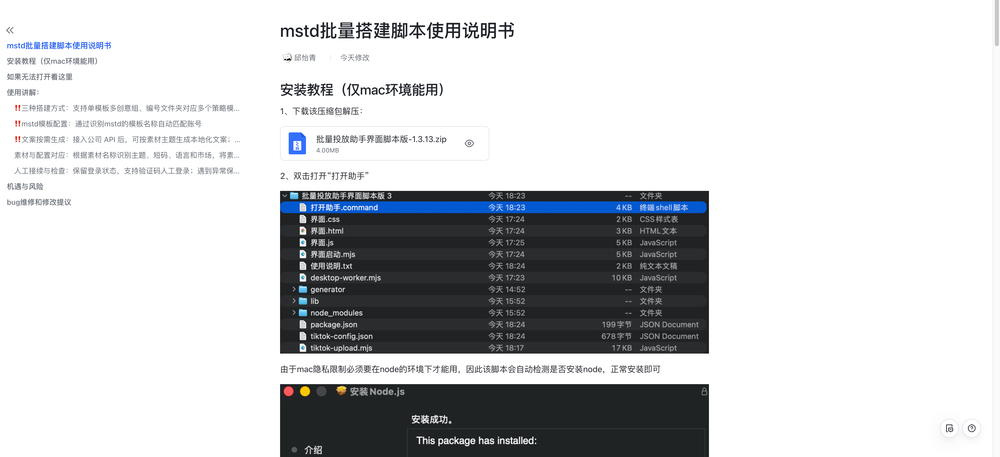

2026
AI 投放自动化助手
自主研究并借助 AI 工具落地自动化脚本，投放工作效率提升近 100%，沉淀产品文档并分享给组内同事。
把创意、投放和数据分析串成一条增长链路，偏好能复用、可验证、能持续迭代的工作方式。
经历时间轴
围绕实际工作中的重复操作、内容生产和数据判断，持续把解决方法沉淀为可复用的工具。
自主研究并借助 AI 工具落地自动化脚本，投放工作效率提升近 100%，沉淀产品文档并分享给组内同事。
将趋势调研、输入解析、平台规则和质量检查写成两份可复用 Skill。
每日通过 TikTok API 取数，拆解新旧广告跑出表现，支持当日复盘与素材迭代。
以文案 Skill 为基础，经过实际使用与适配调试，为完整投放自动化做好前置准备。
从日常投放中的重复操作出发，自主研究并借助 AI 工具实现自动化脚本，把素材、文案和链接接入同一条工作流程。
近 100%
投放工作效率提升

完成工具落地后，整理安装教程、使用说明和维护建议，形成产品使用文档并分享给组内同事，让投放自动化能力能够被理解、使用和复用。
Works
从投放自动化到内容生产与数据分析，让有效的方法成为可复用的增长能力。
Awards
证书图片可以直接打开，PDF 也保留为可查看原件的文件。